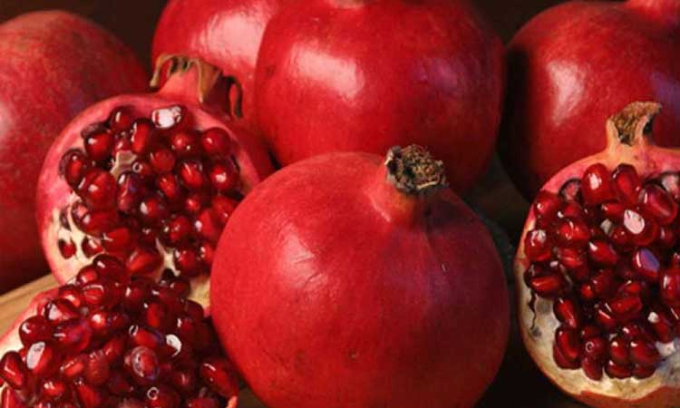

डाळींब विषयी माहिती

डाळींब
डाळींबाची लागवड फार प्राचीन काळापासून म्हणजे इ.स. पुर्व 3500 वर्षापूर्वी झाल्याचा उल्लेख आढळून येतो;
डाळींबाचे उगमस्थान इराण असून इ.स.2000 वर्षापासून डाळींबाची लागवड केली जात होती असे आढळते.
इराण प्रमाणेच
स्पेन, इजिप्त, अफगाणिस्थान, मोराक्को, बलूचीस्थान, पाकीस्तान, इराक, ब्रम्हदेश, चीन, जपान, अमेरिका,
रशिया, भारत या देशामध्ये लागवड केली जाते.
रोजगार हमी योजने अंतर्गत फळबाग लागवड सुरु होण्यापूर्वी सन 1989-90 मध्ये डाळिंब पिकाखाली 7700 हेक्टर
क्षेत्र होते.
डाळिंब पिकांची लागवड अहमदनगर, पुणे, सांगली, सोलापूर, वाशिम या जिल्हयात प्रामुख्याने होत असून
इतर जिल्हयातही मोठया प्रमाणावर लागवड होत आहे.
सद्यस्थितीत महाराष्ट्रामध्ये डाळिंब पिकाखाली 73027 हेक्टर
क्षेत्र असून त्यापैकी सुमारे 41000 हेक्टर क्षेत्र उत्पादनाखाली आहे. त्यापासून 410000 मेट्रीक टन इतके
उत्पादन व 328 कोटी रुपये उत्पन्न मिळते
डाळींबाच्या रसात 10 ते 16 टक्के साखरेचे प्रमाण असते. ही साखर पचनास हलकी असते. क़ुष्टरोगावर डाळींबाचा रस
गुणकारी आहे. त्याचप्रमाणे फळांची साल अमांश व अतिसार या रोगांवर गुणकारी आहे. कापड रंगविण्यासाठीसुध्दा
फळांच्या सालीचा उपयोग केला जातो. अवर्षण प्रवण भागामध्ये हलक्या जमिनीत व कमी पावसावर तग धरणारे हे झाड आहे.
त्यामुळे या पिकाच्या लागवडीखालील क्षेत्रात मोठी वाढ होत आहे.
हवामान
डाळींबाचे पिकास थंड व कोरडे हवामान उपयुक्त आहे. उन्हाळयातील कडक ऊन आणि कोरडी हवा तसेच हिवाळयातील कडक थंडी
डाळिंबाच्या वाढीस योग्य असते.
अशा हवामानात चांगल्या प्रतीची फळे तयार होतात परंतु अशा प्रकारच्या हवामानात
जरी थोडा फार फरक झाला तरी सुध्दा डाळिंबाचे उत्पन्न चांगले येते.
फुले लागल्यापासून फळे होईपर्यंतच्या
काळात भरपूर उन व कोरडे हवामान असल्यास चांगल्या प्रकारची गोड फळे तयार होतात. कमी पावसाच्या प्रदेशात जेथे
थोडीफार ओलीताची सोय आहे तेथे डाळींबाच्या लागवडीस भरपूर वाव आहे.
जमीन
डाळिंबाचे पिक कोणत्याही जमिनीत घेण्यात येते. अगदी निकस, निकृष्ठ जमिनीपासून भारी, मध्यम काळी व सुपीक जमिन
डाळींबाच्या लागवडीसाठी चांगली असते, मात्र पाण्याचा चांगला निचरा होणारी गाळाची किंवा पोयटयाची जमिन
निवडल्यास उत्पन्न चांगले मिळते.
त्याचप्रमाणे हलक्या, मुरमाड माळरान किंवा डोंगर उताराच्या जमिनीसुध्दा
या पिकाला चालतात. मात्र जमिनीत पाण्याचा निचरा होणे आवश्यक आहे. चुनखडी आणि थोडया विम्लतायुक्त (अल्कलाईन)
जमिनीतही डाळिंबाचे पीक येऊ शकते.
डाळींबाच्या जाती
गणेश –
सध्या लागवडीखाली असलेले बहुतांश क्षेत्र हे या वाणाखाली असून हा वाण गणेशखिंड, फळसंशोधन केंद्र, पुणे या
ठिकाणी डॉ. जी.एस.चीमा यांच्या प्रयत्नाने शोधून काढण्यात आलेला आहे. या वाणाचे वैशिष्टय असे की, बिया मऊ
असून दाण्याचा रंग फिक्कट गुलाबी असतो फळात साखरेचे प्रमाणही चांगले आहे. व या वाणापासून उत्पादन चांगले
मिळते.
मस्कत –
या जातीच्या फळाचा आकार मोठा असतो. फळांची साल फिक्कट हिरवी ते लाल रंगाची असून दाण पांढरट ते फिक्कट गुलाबी
असतात. शेतक-यांनी रोपापासून बागा लावल्यामुळे झाडांच्या वाढीत व फळांच्या गुणधर्मात विविधता ाढळते. चवीस हा
वाण चांगला असून उत्पादनही भरपूर येते.
मृदुला, जी १३७, फुले आरक्ता, भगवा
लागवड
डाळिंब लागवडिकरिता निवडलेली जमिन उन्हाळयामध्ये 2 ते 3 वेळेस उभी आडवी नांगरटी करुन कुळवून सपाट करावी. भारी
जमिनीत 5 × 5 मिटर अंतरावर लागवड करावी. त्यासाठी 60 × 60 × 60 सेमी आकाराचे खडडे घ्यावेत. प्रत्येक खडयाशी
तळाशी वाळलेला पालापाचोळयाचा 15 ते 20 सेमी जाडीचा थर देऊन 20 ते 25 किलो शेणखत किंवा कंपोस्ट खत,
1 किलो सिंगल सुपरफॉस्फेट यांच्या मिश्रणाने जमिनी बरोबर भरुन घ्यावेत. सर्वसाधारणपणे पावसाळयात लागवड करावी.
डाळिंबाची तयार केलेली कलमे प्रत्येक खडयात एक याप्रमाणे लागवड करावी.
कलमाच्या आधारासाठी शेजारी काठी पुरुन आधार द्यावा. कलम लावल्यानंतर त्याच बेताचे पाणी द्यावे. लागवडीनंतर
सुरुवातीच्या काळात आवश्यकतेनुसार पाणी द्यावे. 5×5 मीटर अंतराने प्रती हेक्टरी 400 झाडे लावावीत.
पाणी
डाळींब पिकास फुले येण्यास सुरुवात झााल्यानंतर फळे उतरुन घेईपर्यंतच्या काळात नियमित व पुरेसे पाणी देणे
महत्वाचे आहे. पाणी देण्यात अनियमितपणा झाल्यास फुलांची गळ होण्याची शक्यता असते.
फळांची वाढ होत असतांना पाण्याचा ताण पडून नंतर एकदम भरपूर पाणी दिल्यास फळांना तडे पडतात व प्रसंगी अशी न
पिकलेली फळे गळतात.
पावसाळयात पाऊस न पडल्यास जरुरीप्रमाणे पाणी द्यावे व पुढे फळे निघेपर्यंत 8 ते 10 दिवसांच्या अंतराने
पाण्याची पाळी द्यावी. फळाची तोडणी संपल्यानंतर बागांचे पाणी तोडावे.
फळांची तोडणी
डाळींबाचे फळ तयार होण्यास फूले लागण्यापासून साधारणतः 6 महिने लागतात. आंबिया बहाराची फळे जून ते ऑगस्ट
मध्ये मृगबहाराची फळे नोव्हेबर ते जानेवारीमध्ये आणि हस्तबहाराची फळे फेब्रूवारी ते एप्रिल मध्ये तयार
होतात.
फळांची साल पिवळसर करडया रंगाची झाली म्हणजे फळ तयार झाले असे समजावे व फळाची तोडणी करावी.